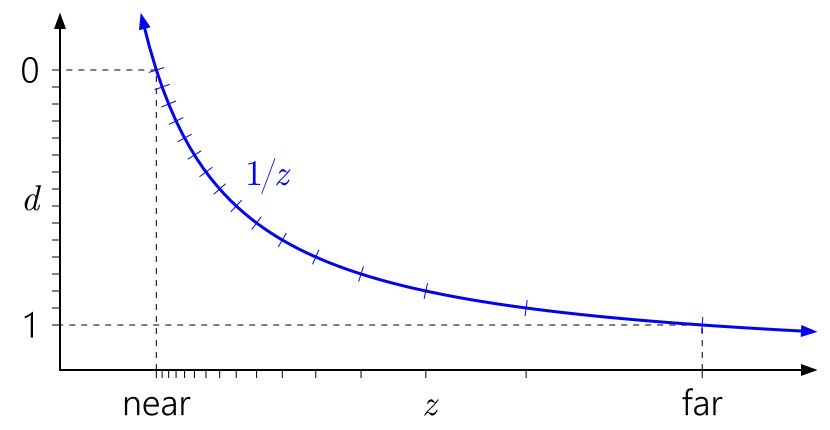

Why is my depth buffer so faint?
This is because depth in perspective projection is not linear. By default depth buffer values are in the range (0.0, 1.0) with 0.0 being the closest and 1.0 being furthest.
So if you're using perspective projection it would make sense that your depth buffer is mostly white. You can map the min and max values onto the range (0.0, 1.0) is a process known as linearization.